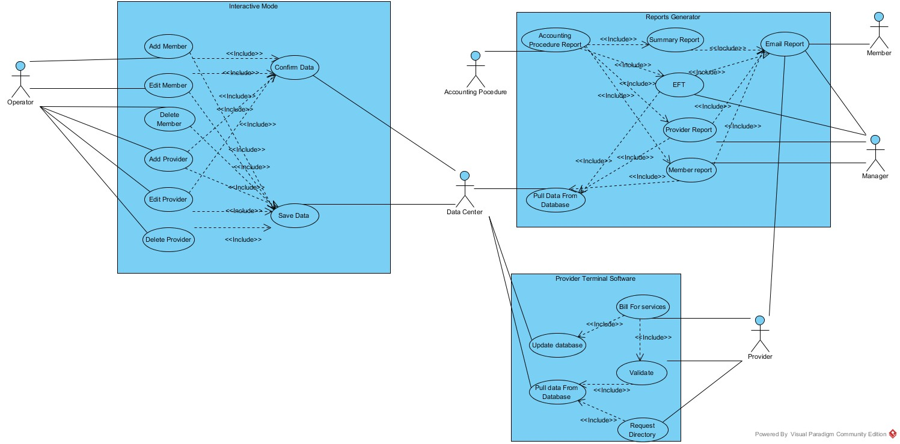
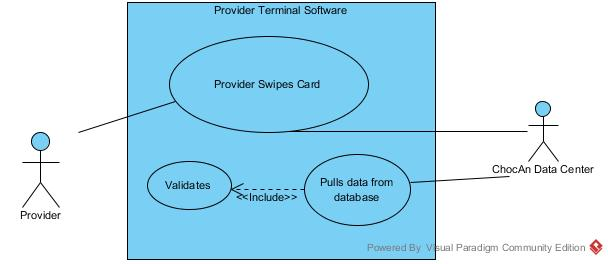
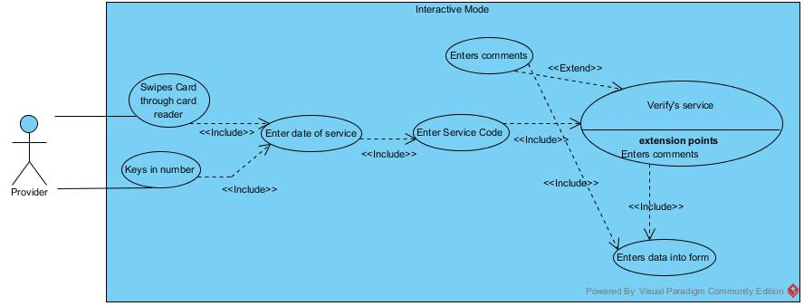
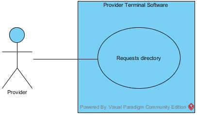
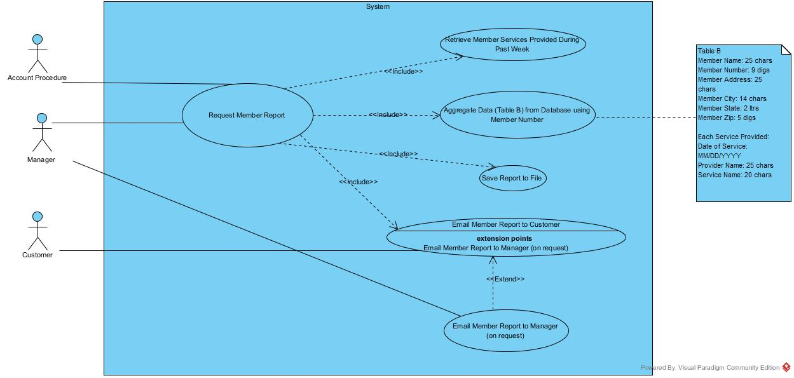
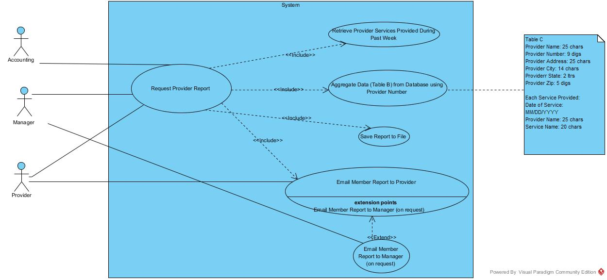
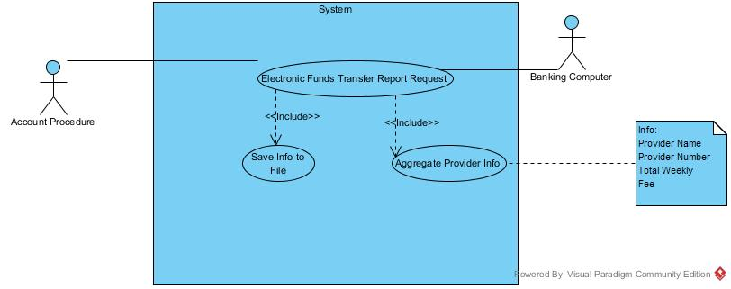
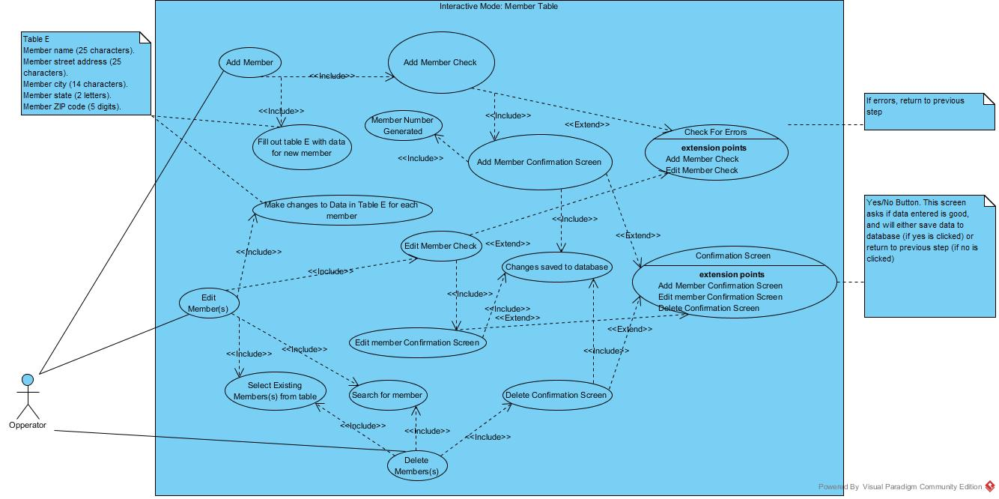

Glossary
- Chocaholics Anonymous
- Organization that helps people suffering from chocolate addiction problems. They are the main customer of our software product. They act as an insurance company of sorts for members who buy from providers.
- Provider
- An individual or organization that works with Chocaholics A. They are usually some kind of medical provider, like a dietician or a therapist. they charge CA for services provided to members.
- Terminal
- The computer that providers use to enter information about members.
- Member
- A paying customer of CA. They pay CA for discounts at provider businesses.
- Data Center
- A division of CA. They will run our software in interactive mode, and their operators can change records of providers and members.
- Member Number
- A unique id number assigned to each member.
- Provider Directory
- A list of all providers types. This can be requested by a provider to aid in entering records.
- Service Code
- A number corresponding to a particular service provided to a member. For example, there is a code for seeing a dietician or therapist.
- Service Fee
- The standard fee charged for a particular service to CA.
- Main Account Procedure
- A reporting procedure that runs every Friday night. It generates reports for each individual member and provider, and sends a summery report to a Accounts Receivable manager.
- ChocAn Manager
- Managers help organize CA records in the CA data center. They can request any report at any time.
- ChocAn Report
- A document containing information about providers, members, or financial transactions.
- Electronic Funds Transfer
- A report containing provider name, provider number, and currency amount to be transferred. EFT report is generated during the main accounting procedure.
- Summary Report
- Report given to accounts payable manager. Report lists providers to be paid that week, number of consultations each had, and total fee for the week.
- Accounts Payable
- The list of provider accounts that must be paid.
- Interactive Mode
- Mode that allows ChocAn operators to add new members, deleted resigned members, and update member records. Provider records can also be added, deleted, or updated.
- Acme Accounting Services
- Third party accounting service contracted by ChocAn.
- Communications Software
- Software needed to facilitate the communication links between the ChocAn data process software, provider terminals, and Acme Accounting Services.
UML Diagrams
Full System Diagram

Individual Use Case Diagrams
Validation

Billing

Directory Request

Create Member Report

Create Provider Report

Save EFT Data

Run Accounting Procedure

Add/Modify Member Data

Add/Modify Provider Data

Use Cases
- Use Case
- Validate
- Context
- Used to Verify a Member's Credentials
- Actors
- Member, Provider
- Main Success Scenario
-
1. Provider swipes card
2. Software contacts database
3. database validates number
4. Terminal displays "Validated"
- Extensions
-
1.a Ok Keys in number
4.a If failed, display error
4.a.1 Invalid
4.a.2 Member Suspended
- Use Case
- Billing
- Context
- Used to Bill a Member for Services Provided
- Actors
- Provider
- Main Success Scenario
-
1. Use Validate Method
2. Enter date of service
3. enter Service code
4. Software display service name
5. Ask for conformation
6. Write record to disk (See table A)
7. Look up fee, and Display fee on terminal
8. Prompt user to fill out paper form
- Extensions
-
4.a If invalid code, display error
5.a If not right service, go to step 3
5.b Can add comments here
- Use Case
- Request Directory
- Context
- Provider Requests Directory of Services
- Actors
- Provider
- Main Success Scenario
-
1. Provider requests directory (Service Names, Codes, and Fees)
2. Software creates directory as file
3. Software emails directory to Provider
- Extensions
-
2.a Ordered Alphabetically (Service Names)
- Use Case
- Member Report
- Context
- Used to generate a report of all services utilized by a member.
- Actors
- ChocAnon Mangers, Accounting Procedure, Members
- Main Success Scenario
-
1. Report Requested
2. Get Weeks file of services
3. Aggregate Data from database using member number
4. Save report to file
5. Email it to customer
- Extensions
-
1.a. By manager
1.b By Accounting
5.a or manager (on request)
- Use Case
- Provider Report
- Context
- Used to generate a report of all services sold by a provider.
- Actors
- ChocAnon Manager, Accounting Procedure, Providers
- Main Success Scenario
-
1. Report requested
2. Get Week's file of services
3. Aggregate Data from database using provider number
4. Save report to file
5. Email it to Provider
- Extensions
-
1.a. By provider
1.b. By manager
1.c By accounting
3.a(see table C)
5.a or manager (on request)
- Use Case
- Electronic Funds Transfer
- Context
- Used to produce data for the Bank to perform an EFT
- Actors
- Banking Computer, Accounting Procedure
- Main Success Scenario
-
1. EFT requested by Accounting Procedure
2. Aggregates Provider name, number, and total weekly fee
3. Saves as file
- Extensions
- N/A
- Use Case
- Accounting Summary Report
- Context
- Run weekly to produce a report for the Accounts Payable Manager
- Actors
- Accounting Procedure, Accounts Payable Manager, Chocoholics Manager
- Main Success Scenario
-
1. Report requested
2. Saves Summery Data to file
3. Email file to Manager for accounts payable
- Extensions
- 3.a or chocoholics manager (at request)
- Use Case
- Friday Night Report Runs
- Context
- Used to produce a number of weekly reports
- Actors
- Accounting Procedure, Accounts Payable Manager, Customers
- Main Success Scenario
-
1. Started by Accounting Procedure Friday at midnight
2. Member report for every member
3. Provider report for every provider
4. EFT
5. Summery report for Accounts payable manager
- Extensions
- N/A
- Use Case
- Add Member
- Context
- Adds Member to Database
- Actors
- Data Center Operators
- Main Success Scenario
-
1. Operator Requests add new member
2. Operator fills out table
3. Software validates data
4. Member number generated
5. Conformation Screen
6. Save to database
- Extensions
-
3.a If error, return to step 2
5.a Operator clicks ok
5.b Operator clicks cancel, return to step 2
- Use Case
- Edit Member
- Context
- Used to edit data related to a particular member
- Actors
- Data Center Operators
- Main Success Scenario
-
1. Operator Selects member(s) on table
2. Operator Clicks edit
3. Operator changes any member fields
4. Software validates data
5. Conformation Screen
6. Save to database
- Extensions
-
1.a Or searched member number/name
2.a Operator taken to edit screen
4.a If error, return to step 3
5.a Operator clicks ok
5.b Operator clicks cancel, return to step 3
- Use Case
- Delete Member
- Context
- Used to remove a member from the database
- Actors
- Data Center Operators
- Main Success Scenario
-
1. Operator Selects member(s) on table
2. operators clicks delete
3. Conformation Screen
4. Save to database
- Extensions
-
1.a Or searched member number/name
3.a Operator clicks ok
3.b Operator clicks cancel, return to step 1
- Use Case
- Add Provider
- Context
- Used to add a provider to the database
- Actors
- Data Center Operators
- Main Success Scenario:
-
1. Operator Requests add new provider
2. Operator fills out table
3. Software validates data
4. Provider number generated
5. Conformation Screen
6. Operator clicks ok
7. Save to database
- Extensions
-
3.a If error, return to step 2
6.a Operator clicks cancel, return to step 2
- Use Case
- Edit Provider
- Context
- Used to edit data related to a provider
- Actors
- Data Center Operators
- Main Success Scenario
-
1. Operator Selects providers(s) on table
2. Operator Clicks edit
3. Operator changes any provider fields
4. Software validates data
5. Conformation Screen
6. Operator clicks ok
7. Save to database
- Extensions
-
1.a Or searched provider number/name
2.a Operator taken to edit screen
4.a If error, return to step 3
6.a Operator clicks cancel, return to step 3
- Use Case
- Delete Provider
- Context
- Used to remove a provider from the database
- Actors
- Data Center Operators
- Main Success Scenario
-
1. Operator Selects providers(s) on table
2. operators clicks delete
3. Conformation Screen
4. Save to database
- Extensions
-
1.a Or searched provider number/name
3.a Operator clicks ok
3.b Operator clicks cancel, return to step 1
Statistics
Percent Authorship

SVN Statistics

Task Distribution
- UML Diagrams
- Validate (Joe)
- Bill for Service (Joe)
- Request Directory (Joe)
- Member Report (Ben)
- Provider Report (Ben)
- EFT (Ben)
- Summary Report(Ben)
- Account Procedure Report Generation (Austin)
- Add User (Justin)
- Add User (Justin)
- Edit User (Justin)
- Delete User (Justin)
- Add Provider (William)
- Delete Provider (William)
- Combined System (All Members)
- Drafting Steps of Project (All Members)
- Writing HTML Report (Austin)
- Distribution, by % of Total Time
- Austin, 20%
- Ben, 20%
- Joe, 20%
- Justin, 20%
- William, 20%